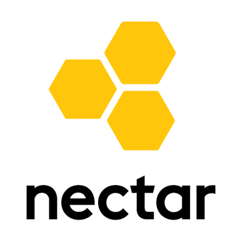

<!doctype html>
<html>
	<head>
		<meta charset="utf-8">
		<meta name="viewport" content="width=device-width, initial-scale=1.0, maximum-scale=1.0, user-scalable=no">

		<title>Introduction to the Research Cloud</title>

		<link rel="stylesheet" href="revealjs/css/reveal.css">
		<link rel="stylesheet" href="revealjs/css/theme/serif.css">

		<!-- Theme used for syntax highlighting of code -->
		<link rel="stylesheet" href="revealjs/lib/css/zenburn.css">

		<link rel="stylesheet" href="font-awesome-4.6.3/css/font-awesome.min.css">

		<!-- Printing and PDF exports -->
		<script>
			var link = document.createElement( 'link' );
			link.rel = 'stylesheet';
			link.type = 'text/css';
			link.href = window.location.search.match( /print-pdf/gi ) ? 'revealjs/css/print/pdf.css' : 'revealjs/css/print/paper.css';
			document.getElementsByTagName( 'head' )[0].appendChild( link );
		</script>
	</head>
	<body>
		<div class="reveal">
<div class="slides">
<section data-markdown data-separator="---" data-separator-vertical="^\n--\n$">
<script type="text/template">

## Getting Started with the Melbourne Research Cloud

<i class="fa fa-twitter" aria-hidden="true"></i> @dwjperry
---

Pre-Requisites

* Laptop
* Working SSH Client
* University Email Address
* Basic Linux Commands

Note: These were circulated prior to this class. If you don't have all of these, you'll miss out a little, but if you work with others you can probably get by.

--

Training Outcomes

* Understand what cloud computing is about
* Submit an allocation request
* Create and operate a computer in the cloud
* Use cloud data storage
* Know where to go for help

---

## Part 1: Background

---

### A boring cloud taxonomy:

<table>
	<thead>
		<tr>
			<td><strong>Infrastructure as a Service (IaaS)</strong></td><td><strong>Platform as a Service (PaaS)</strong></td><td><strong>Software as a Service (SaaS)</strong></td>
		</tr>
	</thead>
	<tr>
		<td>
			<li>Amazon Web Services</li>
			<li>Microsoft Azure</li>
			<li>Nectar</li>
		</td>
		<td>
			<li>Heroku</li>
			<li>Google App Engine</li>
		</td>
		<td>
			<li>Dropbox</li>
			<li>Google Docs</li>
		</td>
	</tr>
</table>

Note: You've probably heard of Dropbox, but what about Amazon Web Services (AWS)? They provide IaaS, which is what we mean  when we talk about 'cloud' in todays session. Some years back, Amazon figured they were good at running data centres, and should rent out spare capacity to others. Users could simply rent a computer for an hour at a time, rather than buy and maintain their own. Amazon actually make more money from AWS these days than retailing!

---
No really, what is it?

---
*Computing on tap...*

---

<section>
    
    
</section>

Note: An analogy. A water bottle is portable, often convenient, but it has a limited size. Water on tap is abundant, practically unlimited. You pay per unit of usage, and usually much less than for bottled water.


---

<section>
    
    
</section>

---

Do these apply to you?

- I want a *faster* computer
- I want *lots* of computers
- I want a *special* kind of computer
- I want to *share* my computer with collaborators
- I want my computer to *host* a web service

---
...and you want them all right now.

---

Then maybe you need cloud computing!

---

Some (Brief) Case Studies

---

### Rendering Artwork

* Rendering animation works; takes too long on desktop computer!
* Run on a large computer in the cloud instead.


Note: Brendan Lee is doing a Masters of Fine Art, and his works are generated in a 3D rendering package. This was getting slow! We helped him provision a powerful computer in the cloud, and install Windows and the rendering package. The work was able to be completed more quickly, and freed up his computer for other work.

---

### Analyse Brain Function

* A desktop environment, with MRI analysis software pre-installed.
* Easy for new students to get started.


Note: Scott Kolbe and his group at Florey use neuroimaging to study the brain. They do much of their work on cloud-based computers, using a customised environment with all the necessary specialist software pre-installed. Being located in the university data centre, these resources also have high-speed access to data repositories.

---

### What about high-performance computing (HPC)?

i.e. Use a supercomputer!


---

### High-Performance vs. Cloud Computing

Need complete control? Don't like sharing/waiting? Hosting a web service? Need Windows? ➡️ Cloud

Don't want to manage a system yourself? Need enormous scale? ➡️ HPC


---

### Virtual Laboratories

Domain-specific environments built upon the research cloud.

* Genomics Virtual Laboratory
* All-Sky Virtual Observatory
* Virtual Geophysics Lab
* ... and more: https://nectar.org.au/labs-and-tools/


---

## Part 1: Introduction to the Research Cloud

---

## Oh no, jargon!

* Instance
* Image
* Volume Storage
* Object Storage
* Security Groups
* Flavor
* Availability Zone
* Keypairs

Note: Unfortunately there is some jargon we have to get through. Let's work through these concepts one at a time, and see how they link together. I don't expect it will make sense right away; we'll sketch out these concepts and then work through some concrete examples.

---

Instance

<i class="fa fa-desktop fa-5x" aria-hidden="true"></i>

Note: Describe each of these concepts, and put them altogether by drawing on whiteboard (todo: pre-design diagram, print icons to use on whiteboard)

---

Image

<i class="fa fa-file-photo-o fa-5x" aria-hidden="true"></i>
---

Volume Storage

<i class="fa fa-hdd-o fa-5x" aria-hidden="true"></i>

---

Object Storage

<i class="fa fa-th fa-5x" aria-hidden="true"></i>

--

Security Group

<i class="fa fa-filter fa-5x" aria-hidden="true"></i>

---

Flavor

<i class="fa fa-desktop fa-2x" aria-hidden="true"></i>  <i class="fa fa-desktop fa-3x" aria-hidden="true"></i>  <i class="fa fa-desktop fa-5x" aria-hidden="true"></i>

---

Availability Zone


<i class="fa fa-globe fa-5x" aria-hidden="true"></i>

---

Key Pair

<i class="fa fa-key fa-5x" aria-hidden="true"></i>  <i class="fa fa-unlock-alt fa-5x" aria-hidden="true"></i>

---

SSH (Secure SHell)

<i class="fa fa-terminal fa-5x" aria-hidden="true"></i>

---

Nectar



---

Demo: Let's create an instance.

---

Recap:

* Trial project with 2 CPU-Months of compute time available immediately.
* Create an  __Instance__, with a particular __Flavor__.
* Use an __Image__ to load an operating system (and perhaps software) onto it.
* Select a __Keypair__ to use with the __Instance__, allowing us to login.
* Set some __Security Groups__ to allow network access in/out of the __Instance__.
* Choose an __Availability Zone__ (data centre) with the Nectar network where our __Instance__ will reside.
* We connect to our __Instance__ via __SSH__, which authenticates us using our __Keypair__.


---

### Your turn!

Challenge 1: Create an instance and connect to it.

Instructions: http://go.unimelb.edu.au/j7d6

Note: Now it's your turn to have a go! Work in groups; I suggest one person has the instructions open on their computer, while another drives.

---


---

Print some of above onto postits or magnets, and use to build a digram to explain?


---

# The End

---

</script>
</section>
</div>
		</div>

		<script src="revealjs/lib/js/head.min.js"></script>
		<script src="revealjs/js/reveal.js"></script>

		<script>
			// More info https://github.com/hakimel/reveal.js#configuration
			Reveal.initialize({
				history: true,

                transition: 'concave', // none/fade/slide/convex/concave/zoom

				// More info https://github.com/hakimel/reveal.js#dependencies
				dependencies: [
					{ src: 'revealjs/plugin/markdown/marked.js' },
					{ src: 'revealjs/plugin/markdown/markdown.js' },
					{ src: 'revealjs/plugin/notes/notes.js', async: true },
					{ src: 'revealjs/plugin/highlight/highlight.js', async: true, callback: function() { hljs.initHighlightingOnLoad(); } }
				]
			});
		</script>
	</body>
</html>
